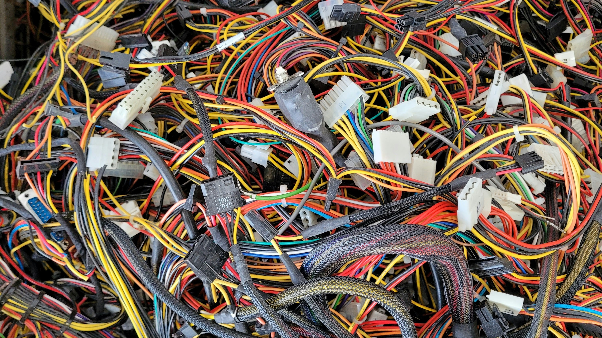
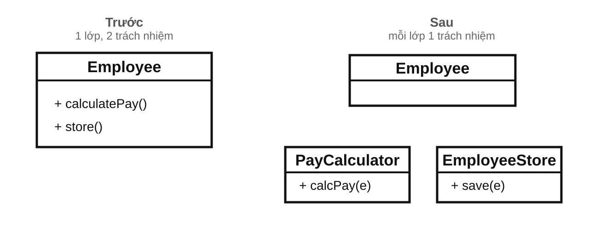
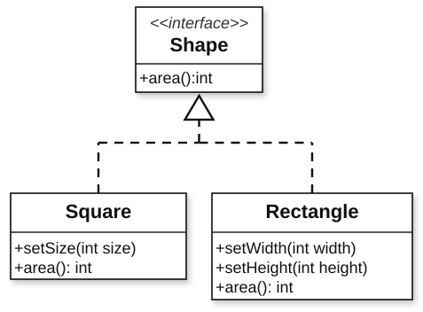
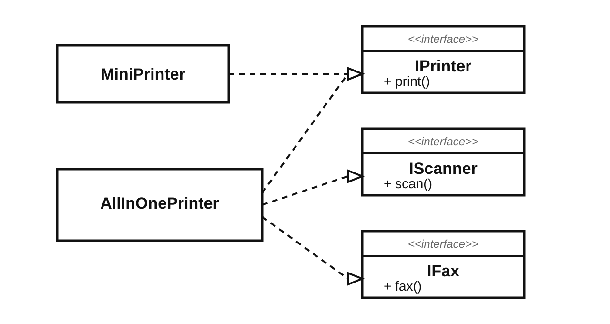

Phương pháp luận lập trình
Bài 6: Các nguyên tắc thiết kế OOP
Trường ĐH Công nghệ – Đại học Quốc gia Hà Nội
Nội dung
- Giới thiệu: Các mùi thiết kế
- Nguyên lý Đơn Nhiệm (Single Responsibility Principle)
- Nguyên lý Mở Rộng / Hạn Chế (Open/Closed Principle)
- Nguyên lý Thay Thế Liskov (Liskov Substitution Principle)
- Nguyên lý Phân Tách Giao Diện (Interface Segregation Principle)
- Nguyên lý Nghịch Đảo Phụ Thuộc (Dependency Inversion Principle)
0.
Giới thiệu:
Các mùi thiết kế
Một vài mùi thiết kế

"Mùi thiết kế" là dấu hiệu sớm cho thấy code đang khó hiểu, khó sửa, hoặc dễ vỡ khi thay đổi.
Ví dụ
1. Lớp quá lớn
class SuperUserManager {
public:
void process(
User& u, Database& db,
EmailService& mail, Logger& log) {
// kiểm tra dữ liệu
// format email
// lưu database
// ghi log
}
};
Một lớp làm quá nhiều việc → khó hiểu, khó sửa.
2. switch phình to
void readData(DeviceType type) {
switch (type) {
case DeviceType::Keyboard:
readKeyboard(); break;
case DeviceType::PaperTape:
readPaperTape(); break;
// ...
// Thêm thiết bị mới?
// → Lại thêm case
}
}
Thêm loại mới → phải mở code cũ ra sửa.
Mùi thiết kế → Nguyên lý SOLID
- Lớp quá lớn, sửa dây chuyền → SRP
- switch phình to, thêm loại mới phải sửa mã cũ → OCP
- Thay lớp con làm hỏng giả định của lớp cha → LSP
- Giao diện quá lớn → ISP
- Phụ thuộc chặt vào chi tiết → DIP
Từ đây, ta đi từ dấu hiệu xấu sang nguyên lý thiết kế.
1.
Nguyên lý
Đơn Nhiệm
Khi một lớp biết làm tất cả

“Chỉ vì bạn có thể làm điều đó, không có nghĩa là bạn nên làm!”
Nguyên lý Đơn Nhiệm (SRP)
→ Mỗi lớp chỉ phục vụ một actor — người/bộ phận duy nhất có quyền yêu cầu thay đổi lớp đó.
Trách nhiệm = Lý do thay đổi
- Một trách nhiệm = một nhóm việc phục vụ cùng một actor.
- Actor = người/bộ phận có quyền yêu cầu thay đổi code.
- Một lớp, nhiều actor → nhiều lý do thay đổi → vi phạm SRP.
Vì sao cần SRP?
- Thay đổi cô lập: thay đổi không lan dây chuyền.
- Dễ kiểm thử: ít phụ thuộc, dễ cô lập.
- Dễ đặt tên: tên lớp rõ, không cần chữ "AND".
- Dễ tái sử dụng: lớp chuyên biệt dùng được ở nhiều nơi.
- Cộng tác tốt hơn: các nhóm làm song song, ít xung đột.
Ví dụ: Employee
- CFO yêu cầu đổi quy tắc tính lương → sửa calculatePay.
- CTO yêu cầu đổi database → sửa store.

- Hai actor, một lớp → hai lý do thay đổi.
- Đổi lương không nên bắt ta sửa cùng lớp đang lo lưu trữ.
Khi nào nên tách?
-
NÊN TÁCH:
Một phần đổi, phần kia không phải đổi theo.
→ Tách 2 lớp PayCalculator và EmployeeStore. - CHƯA CẦN TÁCH: Nếu hai phần vẫn luôn sửa cùng nhau.
Tự hỏi 2 điều:
- Đổi cách tính lương, có phải sửa phần lưu không?
- Đổi cách lưu, có phải sửa phần tính lương không?
Nếu không, nên tách.
Giải pháp: tách trách nhiệm

Quy tắc nghiệp vụ thay đổi → chỉ sửa PayCalculator.
Đổi database → chỉ sửa EmployeeStore.
Dấu hiệu vi phạm SRP
SRP dễ hiểu nhưng khó làm đúng.
- Lớp/hàm quá dài.
- Tên cần chữ "AND".
- Tên quá chung chung.
- Sửa một chỗ, hỏng chỗ khác.
- Một lớp vừa nghiệp vụ, kiểm tra dữ liệu, I/O.
Ví dụ: Lớp quá dài
- Nhiều actor khác nhau cùng yêu cầu thay đổi.
class StudentService {
public:
void validate(); // kiểm tra dữ liệu
void calculateScholarship(); // học vụ
void exportCsv(); // báo cáo
void sendEmail(); // thông báo
void writeLog(); // vận hành
};
💡 Tách: StudentValidator · ScholarshipCalculator · CsvExporter · EmailSender · Logger
Ví dụ: Tên có chữ "AND"
- Chỉ nhìn tên đã thấy hai việc.
class SaveAndSendReport {
public:
void save(const Report& r);
void send(const Report& r);
};
💡 Tách: ReportRepository (lưu trữ) · ReportMailer (gửi email)
Ví dụ: Nghiệp vụ + kiểm tra + I/O
- Ba loại việc → ba actor khác nhau.
class UserService {
public:
bool validateEmail(std::string_view); // validation rules
void registerUser(const User& u); // business logic
void writeLog(const User& u); // logging / infra
};
💡 Tách: EmailValidator · UserRegistrar · AuditLogger
2.
Nguyên lý Mở Rộng / Hạn Chế
Mở rộng mà không sửa mã cũ

"Thêm tính năng bằng cách thêm code mới — không phải bằng cách sửa code cũ."
Định nghĩa OCP
- Mở (extension): Có thể thêm hành vi mới, không sửa code cũ.
- Đóng (modification): Code đã ổn định thì không cần sửa.
So sánh các cách làm

Trên: sửa code cũ mỗi lần thêm
Dưới: thêm module mới mà không đụng code cũ.
Chìa khóa: trừu tượng hóa
"Làm sao để thay đổi những gì một mô-đun làm mà không thay đổi chính mã nguồn của nó?"
- Tách phần cố định (logic điều phối) khỏi phần thay đổi (cách làm cụ thể).
- Phần cố định phụ thuộc vào giao diện trừu tượng.
- Phần thay đổi = lớp con cài đặt giao diện đó.
Ví dụ: tính chiết khấu
- DiscountCalculator tính giảm giá theo loại sản phẩm.
- Hôm nay có Electronics, Clothing.
- Ngày mai thêm Food hoặc BlackFriday thì sao?
class DiscountCalculator {
public:
double calculate(std::string_view type, double price) const {
if (type == "Electronics") return price * 0.10;
if (type == "Clothing") return price * 0.20;
return 0.0;
}
};
Vấn đề của DiscountCalculator
- Mỗi loại mới → lại phải sửa code cũ.
- Dễ gây lỗi dây chuyền cho logic đang chạy ổn định.
- Mỗi lần sửa → phải kiểm thử lại toàn bộ các trường hợp cũ.
- Lâu dần lớp sẽ phình to với rất nhiều if/else.
Giải pháp: trừu tượng hóa
- Tạo một giao diện chung, ví dụ IDiscount.
- Mỗi kiểu chiết khấu là một lớp riêng.
- DiscountCalculator chỉ làm việc qua giao diện đó.
- Thêm loại mới → thêm lớp mới, không sửa lớp cũ.
Mã giải pháp OCP
class IDiscount {
public:
virtual ~IDiscount() = default;
virtual double apply(double price) const = 0;
};
class ElectronicsDiscount : public IDiscount {
public:
double apply(double price) const override { return price * 0.10; }
};
class BlackFridayDiscount : public IDiscount {
public:
double apply(double price) const override { return price * 0.50; }
};
class DiscountCalculator {
public:
double calculate(const IDiscount& discount, double price) const {
return discount.apply(price);
}
};
DiscountCalculator đóng — thêm BlackFridayDiscount chỉ cần tạo lớp mới.
Mở gì? Đóng gì?
- Thêm loại giảm giá mới: chỉ tạo lớp mới kế thừa IDiscount
- Không đụng chạm mã cũ
- DiscountCalculator: không cần thêm if/else
- Các lớp chiết khấu cũ: an toàn trước thay đổi
OCP không đóng tuyệt đối
- Khách hàng muốn áp dụng nhiều chiết khấu cùng lúc.
- Các lớp hiện tại đang tính độc lập từng loại.
- Muốn kết hợp lại → có thể phải mở rộng giao diện hoặc thêm lớp tổ hợp.
Ghi nhớ: "Đóng" với thay đổi này chưa chắc "đóng" với thay đổi khác. Không có thiết kế nào đúng cho mọi tình huống.
Không trừu tượng hóa quá sớm
- Chưa thấy thay đổi lặp lại → chưa cần tách.
- Thấy cùng một kiểu sửa lặp lại từ lần thứ hai → bắt đầu trừu tượng hóa.
Kích thích thay đổi sớm
Lưu ý: Trì hoãn quá lâu → code cứng lại → tái cấu trúc rất tốn công.
- Viết kiểm thử sớm giúp lộ ra những chỗ thiết kế còn cứng nhắc.
- Khó viết kiểm thử = tín hiệu thiết kế cần cải thiện.
- Ví dụ: cần ghép nhiều khuyến mại → có thể thêm một lớp CompositeDiscount.
3.
Nguyên lý
Thay Thế Liskov
Thay vào có an toàn không?

“Nếu nó trông như con vịt, kêu như con vịt, nhưng lại cần pin, thì có lẽ bạn đã thiết kế trừu tượng sai.”
Định nghĩa LSP
Ở đâu dùng T, thay bằng S thì chương trình vẫn đúng.
- Thay thế được = code gọi không cần biết đang dùng lớp cha hay lớp con.
- Vi phạm → lỗi lúc chạy thay vì lúc biên dịch, code gọi bị bất ngờ.
Công cụ: Thiết kế theo hợp đồng
Biến giả định ngầm thành quy tắc rõ ràng.
Điều kiện để phương thức được gọi.
→ Lớp con không được đòi hỏi nhiều hơn.
Cam kết sau khi phương thức chạy xong.
→ Lớp con không được cam kết ít hơn.
Tính chất luôn đúng của đối tượng.
→ Lớp con phải duy trì bất biến của lớp cha.
Square có nên kế thừa Rectangle?
- Toán học: hình vuông là một hình chữ nhật.
- Rectangle cho phép đổi rộng và cao độc lập.
- Square thì không.
Đặt rộng = 5, cao = 4
→ diện tích = 20
Đặt rộng = 5 → cao cũng thành 5
Đặt cao = 4 → rộng cũng thành 4
→ diện tích còn 16
Quan hệ “is-a” là về hành vi
- IS-A nghĩa là: lớp con phải dùng được như lớp cha.
- Rectangle đứng riêng thì hợp lệ.
- Square đứng riêng cũng hợp lệ.
- Nhưng: Square phá giả định của code dùng Rectangle.
Đúng về toán học ≠ đúng về thiết kế.
Cách sửa Rectangle/Square
- Không cho Square kế thừa Rectangle.
- Rút điểm chung lên Shape.
- Rectangle và Square kế thừa Shape riêng.

Kết quả: Giữ đúng hợp đồng, mỗi lớp đúng với bản chất hành vi của nó.
Ví dụ: vi phạm tiền điều kiện
class TextDocument {
public:
virtual void addText(std::string_view text) { // TĐK: chuỗi bất kỳ độ dài
content += text;
}
protected:
std::string content;
};
class SmsDocument : public TextDocument {
public:
void addText(std::string_view text) override { // TĐK MẠNH HƠN → vi phạm LSP!
if (text.size() > 160) throw std::invalid_argument("SMS too long");
content += text;
}
};
→ Tiền điều kiện mạnh hơn → vi phạm LSP!
🤔 Thảo luận
Câu hỏi: Đoạn code này có vi phạm LSP không?
class Bird {
public:
virtual void fly() { /* bay... */ }
};
class Penguin : public Bird {
public:
void fly() override {
throw std::logic_error("Chim cánh cụt không bay được!");
}
};
4.
Nguyên lý
Phân Tách
Giao Diện
Đừng bắt lớp làm việc thừa

“Mã sử dụng không nên phụ thuộc vào những giao diện mà nó không dùng!”
Định nghĩa ISP
- Sai lầm thường gặp: Gom hết vào một interface lớn.
- Hậu quả: Ép các lớp cài phương thức không liên quan.
Hãy tách interface lớn thành nhiều interface nhỏ, tập trung theo từng khả năng độc lập.
Ví dụ: IMachine
class IMachine {
public:
virtual ~IMachine() = default;
virtual void print() = 0;
virtual void scan() = 0;
virtual void fax() = 0;
};
Interface này hợp lý với máy đa năng. Nhưng nếu hệ thống xuất hiện một MiniPrinter chỉ biết in thì sao?
Giải pháp: tách interface
- Tách giao diện lớn thành các giao diện nhỏ.
- MiniPrinter chỉ phụ thuộc vào phần nó cần.
- AllInOnePrinter kết hợp nhiều interface nhỏ.

Kết quả: Client nào cần gì thì chỉ phụ thuộc vào đúng phần đó.
Mã giải pháp ISP
class IPrinter {
public:
virtual ~IPrinter() = default;
virtual void print() = 0;
};
class IScanner {
public:
virtual ~IScanner() = default;
virtual void scan() = 0;
};
class IFax {
public:
virtual ~IFax() = default;
virtual void fax() = 0;
};
class MiniPrinter : public IPrinter {
public:
void print() override { /* in */ }
};
class AllInOnePrinter
: public IPrinter, public IScanner, public IFax {
public:
void print() override { /* in */ }
void scan() override { /* quét */ }
void fax() override { /* fax */ }
};
5.
Nguyên lý
Nghịch Đảo
Phụ Thuộc
Ai nên phụ thuộc vào ai?

“Bạn có hàn trực tiếp một chiếc bóng đèn vào dây điện trong tường không?”
Định nghĩa DIP
- Các module cấp cao không nên phụ thuộc vào các module cấp thấp. Cả hai nên phụ thuộc vào sự trừu tượng (Abstraction/Interface).
- Sự trừu tượng không nên phụ thuộc vào chi tiết. Chi tiết nên phụ thuộc vào sự trừu tượng.
Ví dụ: Switch và LightBulb
class LightBulb {
public:
void turnOn() { /* bật đèn */ }
void turnOff() { /* tắt đèn */ }
};
class Switch {
LightBulb bulb;
public:
void operate() {
bulb.turnOn();
}
};
Switch đang phụ thuộc trực tiếp vào một chi tiết cụ thể: LightBulb.
🤔 Nếu đổi sang quạt thì sao?
- Nếu có, thì Switch đang bị dính chặt vào LightBulb.
- Và như vậy vừa vi phạm DIP, vừa làm khó mở rộng theo OCP.
Giải pháp: dùng một giao diện chung
- Tạo một giao diện ISwitchable.
- Switch chỉ biết tới ISwitchable.
- LightBulb, Fan cài đặt giao diện đó.
Cả lớp cấp cao và lớp cấp thấp đều gặp nhau ở một sự trừu tượng.
Mã giải pháp DIP
class ISwitchable {
public:
virtual ~ISwitchable() = default;
virtual void turnOn() = 0;
virtual void turnOff() = 0;
};
class LightBulb : public ISwitchable {
public:
void turnOn() override { /* bật đèn */ }
void turnOff() override { /* tắt đèn */ }
};
class Fan : public ISwitchable {
public:
void turnOn() override { /* bật quạt */ }
void turnOff() override { /* tắt quạt */ }
};
class Switch {
ISwitchable& device;
public:
explicit Switch(ISwitchable& device) : device(device) {}
void operate() {
device.turnOn();
}
};
Vì sao cách này tốt hơn?
- Đổi từ LightBulb sang Fan → không cần sửa Switch.
- Thêm thiết bị mới chỉ cần cài ISwitchable, không sửa Switch.
- Dễ kiểm thử hơn: có thể truyền vào một đối tượng giả để test Switch.
Nguyên tắc Hollywood: “Đừng gọi chúng tôi, chúng tôi sẽ gọi bạn.”
→ Lớp cấp cao đặt ra giao diện, lớp chi tiết phải đi theo giao diện đó.
Tổng kết
Các nguyên lý SOLID
Từ OOP Đến Mẫu Thiết Kế
Bài 5
Giới thiệu OOP
- Học công cụ.
- Đóng gói, kế thừa, đa hình.
Bài 6
Nguyên lý thiết kế
- Học cách dùng công cụ.
- SOLID giúp thiết kế dễ đổi hơn.
Bài 7
Mẫu thiết kế
- Học lời giải quen thuộc.
- Biến nguyên lý thành cấu trúc cụ thể.
➡️ OOP cho công cụ, SOLID cho nguyên lý, mẫu thiết kế cho cách áp dụng lặp lại.